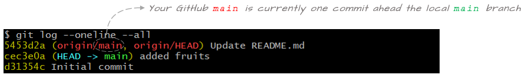

Exploring syncing scenarios between local and remote repositories
Exploring syncing scenarios between local and remote repositoriesCheck the repo's statusCreate a local commitUpdate the remote repo:pushCreate a commit on GitHubUpdate the local repo: pullAdding a branchCreating a push conflictModify the local feedback branchModify the remote feedback branchFixing conflict between remote and local repoFinal exercise
In this tutorial you will learn how to keep a local repo synced with its GitHub counterpart. You will work off of the proj2 repo created in a previous tutorial.
Check the repo's status
Let's first check that our repo has nothing to commit and that it's in sync with the GitHub repo.
$ git statusxOn branch mainYour branch is up to date with 'origin/main'.nothing to commit, working tree clean
The message indicates that there is nothing to commit. It also indicates that it's in sync with with GitHub counterpart via the Your branch is up to date with 'origin/main' message.
Recall that the handle origin points to the GitHub repo. To confirm this, simply type:
xxxxxxxxxxgit remote -vxxxxxxxxxxorigin https://github.com/jdcolby/proj2.git (fetch)origin https://github.com/jdcolby/proj2.git (push)
Now let's check the log.
xxxxxxxxxx$ git log --oneline --allxxxxxxxxxxd31354c (HEAD -> main, origin/main, origin/HEAD) Initial commit
It shows an existing commit. This was not created by us in our local repo. It was created by GitHub when we initially setup the repo on the web page. This commit includes the addition of the README file.
The log has a few more elements not present in an earlier tutorial where we were working exclusively in a local git repo. This log adds origin/main and origin/HEAD. Recall that origin is a handle to the remote GitHub repo. origin/main is the main branch on the remote repo and origin/HEAD is the active branch on the remote repo.
The log indicates that the local and remote main branches are in sync. It also indicates that the local and remote HEADs are pointing to the tip of their respective branches.
Create a local commit
Next, you will create a local commit by adding a file called fruits.txt. Populate the file with the following items.
xxxxxxxxxxapplegrapesmango
Once the file is saved, stage and commit it.
xxxxxxxxxx$ git add fruits.txt$ git commit -m "added fruits"Now let's check the status:
xxxxxxxxxx$ git statusxxxxxxxxxxOn branch mainYour branch is ahead of 'origin/main' by 1 commit.(use "git push" to publish your local commits)nothing to commit, working tree clean
The output indicates that all changes in this repo were properly committed, but it also indicates that our local repo is no longer in sync with its GitHub counterpart. It's stating that our local repo is ahead of the remote repo by one commit.
Another way to view the disconnect between the local an remote repos is to view the log.
xxxxxxxxxx$ git log --oneline xxxxxxxxxxcec3e0a (HEAD -> main) added fruitsd31354c (origin/main, origin/HEAD) Initial commit

It's important to note that staging and committing changes in a local repo does not update the remote repo. In fact, you can work on a local repo and commit changes for days on end without affecting the remote repo.
Next, you will learn how to update the remote repo.
Update the remote repo:push
To push changes made locally to the remote repo, type:
xxxxxxxxxx$ git pushDepending on how you have your authentication environment setup, you may or may not be prompted for a username/password.
You'll see a status message similar to the following:
xxxxxxxxxxEnumerating objects: 4, done.Counting objects: 100% (4/4), done.Delta compression using up to 4 threadsCompressing objects: 100% (2/2), done.Writing objects: 100% (3/3), 294 bytes | 294.00 KiB/s, done.Total 3 (delta 0), reused 0 (delta 0), pack-reused 0To https://github.com/jdcolby/proj2.gitd31354c..cec3e0a main -> main
Let's check the status.
xxxxxxxxxx$ git statusxxxxxxxxxxOn branch mainYour branch is up to date with 'origin/main'.nothing to commit, working tree clean
The message indicates that the local branch is in sync with its remote counterpart. Let's check the log:
xxxxxxxxxx$ git logxxxxxxxxxxcec3e0a (HEAD -> main, origin/main, origin/HEAD) added fruitsd31354c Initial commit
You'll note that we did not add a commit. The only thing that has changed is the sync status. Both main branches are now in sync.
Create a commit on GitHub
A typical workflow involves making changes to a local repo, then pushing that repo to its remote counterpart on a regular basis. In other words, the local repo is more likely to find itself ahead of the remote repo regularly.
However, there may be times when the remote repo is ahead of your local repo. This can happen if you are working off of the remote repo from two different computers. For example, you might have a local copy of the repo in your work office and another local copy in your home office. You make changes to the local office repo then push it to the remote repo. This will set you home repo behind the remote repo.
Another scenario that can cause the remote repo to be ahead of the local repo is one where a collaborator is contributing to the remote repo.
In the example that follows, we'll create a scenario where the remote repo will be ahead of the local repo. We'll do this by simply editing a file directly in GitHub.
Go to your GitHub proj2 repo page . Make sure to refresh the page to see all recent changes made to the repo.
Click on the README.md file.
Click on the pencil icon to the right of the window to enter edit mode.

The README file is in a markdown format. Edit the text as follows:
xxxxxxxxxx# Proj 2 repoThis is a test repo used to explore different syncing scenarios
A the bottom of the page, you have the opportunity to add a commit message before committing the changes. Note that the staging process is taken care of on the GitHub page.
We'll keep the default commit message and click on the Commit changes button.
Update the local repo: pull
Now go back to your local repo Bash shell and check its status.
xxxxxxxxxx$ git statusxxxxxxxxxxOn branch mainYour branch is up to date with 'origin/main'.nothing to commit, working tree clean
The status suggests that everything is up to date. But this is misleading. The status function does not actively check the state of the remote repo. We need to sync the remote log with out local repo.
xxxxxxxxxx$ git fetchNow let's check the status again.
xxxxxxxxxx$ git statusxxxxxxxxxxOn branch mainYour branch is behind 'origin/main' by 1 commit, and can be fast-forwarded.(use "git pull" to update your local branch)nothing to commit, working tree clean
The message now properly recognizes that the remote repo is ahead by one commit. We can check the log as well. Make sure to add the --all option to see the changes in the remote branch.
xxxxxxxxxx$ git log --oneline --allxxxxxxxxxx5453d2a (origin/main, origin/HEAD) Update README.mdcec3e0a (HEAD -> main) added fruitsd31354c Initial commit

To update the local repo, run the pull command
xxxxxxxxxx$ git pullNow check the log.
xxxxxxxxxx$ git log --oneline --allxxxxxxxxxx5453d2a (HEAD -> main, origin/main, origin/HEAD) Update README.mdcec3e0a added fruitsd31354c Initial commit
Both repos are now in sync.
Adding a branch
Let's add a branch called feedback to the local repo.
xxxxxxxxxx$ git branch feedback$ git checkout feedbackLet's check the log.
xxxxxxxxxx$ git log --onelinexxxxxxxxxx5453d2a (HEAD -> feedback, origin/main, origin/HEAD, main) Update README.mdcec3e0a added fruitsd31354c Initial commit
We have not made any changes to the repo, so both local branches (main and feedback) are pointing to the same commit. GitHub's origin/main is also pointing to the same commit. But note that we do not see an origin/feedback branch on GitHub.
To confirm that a feedback branch is not present in our remote repo, we can run the branch command with the -r branch.
xxxxxxxxxx$ git branch -rxxxxxxxxxxorigin/HEAD -> origin/mainorigin/main
We have yet to push this new branch to the remote repo. We can do this later, after adding a few commits to feedback, or we can do this now. We'll opt for the latter option.
xxxxxxxxxx$ git push -u origin feedbackNow let's view the remote branches.
xxxxxxxxxx$ git branch -rxxxxxxxxxxorigin/HEAD -> origin/mainorigin/feedbackorigin/main
The log will now show the origin/feedback branch.
xxxxxxxxxx$ git log --oneline --allxxxxxxxxxx5453d2a (HEAD -> feedback, origin/main, origin/feedback, origin/HEAD, main) Update README.mdcec3e0a added fruitsd31354c Initial commit
Creating a push conflict
In this next exercise, we will create a conflict whereby changes will be made to both the local repo and the remote repo before attempting to sync the two via a push.
Modify the local feedback branch
First, we'll edit the fruits.txt file in the feedback branch by replacing the mango fruit with pear.
xxxxxxxxxxapplegrapespear
Stage and commit the change.
xxxxxxxxxx$ git add fruits.txt$ git commit -m "replaced mango with pear"Modify the remote feedback branch
Next, we'll modify the fruits.txt file on the remote feedback branch. We'll do this using the GitHub editor.
Go to your GitHub's account's proj2 repo page. Make sure to refresh the page to view the feedback branch.
From the branch pull-down menu, click on feedback.
This will place you in the remote feedback branch.
Click on the fruits.txt file.
Launch the editor mode by clicking the pencil icon near the right-hand side of the window.
Add peach to the list of fruits. When done, the fruits.txt file should look like this:
xxxxxxxxxxapplegrapesmangopeach
At the bottom of the Editor page, type Added peach as the commit message then click on Commit changes.
Fixing conflict between remote and local repo
We now have separate commits made to the local and remote repos. We will first attempt a push from the local repo.
xxxxxxxxxx$ git pushxxxxxxxxxxTo https://github.com/jdcolby/proj2.git! [rejected] feedback -> feedback (fetch first)error: failed to push some refs to 'https://github.com/jdcolby/proj2.git'hint: Updates were rejected because the remote contains work that you dohint: not have locally. This is usually caused by another repository pushinghint: to the same ref. You may want to first integrate the remote changeshint: (e.g., 'git pull ...') before pushing again.hint: See the 'Note about fast-forwards' in 'git push --help' for details.
The push failed. Lets check the log.
xxxxxxxxxx$ git log --oneline --allxxxxxxxxxx8b16ed7 (HEAD -> feedback) replaced mango with pear5453d2a (origin/main, origin/feedback, origin/HEAD, main) Update README.mdcec3e0a added fruitsd31354c Initial commit
The log does not yet know that changes have been made to the remote repo. As with the status command, the log command does not automatically check for updates on GitHub. We need to once again call the fetch command to update changes made remotely.
xxxxxxxxxx$ git fetchxxxxxxxxxx$ git log --oneline --allxxxxxxxxxx8b16ed7 (HEAD -> feedback) replaced mango with peare1ebf63 (origin/feedback) Added peach5453d2a (origin/main, origin/HEAD, main) Update README.mdcec3e0a added fruitsd31354c Initial commit
We now see the two distinct commits: 8b16ed7 created in our local repo and commit e1ebf63 created in our remote repo (recall that your hash ID will differ from those shown here).
To resolve the conflict, we need to pull the changes made on GitHub then integrate them as needed in our current repo. The best case scenario is one where the file or files modified on the remote repo are not those modified locally. Unfortunately, this is not the case in our current scenario given that both repos modified the same file (fruits.txt). This conflict will be reflected in the following message.
xxxxxxxxxx$ git pullxxxxxxxxxxAuto-merging fruits.txtCONFLICT (content): Merge conflict in fruits.txtAutomatic merge failed; fix conflicts and then commit the result.
The attempted pull was not without a change to our local repo. The fruits.txt file was modified locally following the merge, but it was not committed. It's awaiting out manual intervention.
Open the local fruits.txt file in a Bash editor such as vim or nano, or open it in a GUI text editor.
xxxxxxxxxxapplegrapes<<<<<<< HEADpear=======mangopeach>>>>>>> e1ebf63873a5565dab5cda5d1759d210d5a1693f
Markers were added to the file. They are showing the state of the file In our current HEAD and that in the file on GitHub (note that the log output lists the hash id starting with e1ebf63 as the commit id associated withorigin/feedback ).
Everything between <<<<<<< HEAD and ======= is what we currently have in our local feedback branch. (note that an empty line was added in this example).
xxxxxxxxxx<<<<<<< HEADpear=======
Everything between ======= and >>>>>>> e1ebf63... is what we currently have on GitHub's origin/remote branch.
xxxxxxxxxx=======mangopeach>>>>>>> e1ebf63873a5565dab5cda5d1759d210d5a1693f
We now need to decide how we want to fix this conflict. We'll go ahead and remove mango and keep the peach. The file should look like the following when done (don't forget to remove the markers).
xxxxxxxxxxapplegrapespearpeach
We now need to stage then commit the fix.
xxxxxxxxxx$ git add fruits.txt$ git commit -m "fixed pull conflict"Let's check the status to make sure that the conflict has been fixed.
xxxxxxxxxx$ git statusxxxxxxxxxxOn branch feedbackYour branch is ahead of 'origin/feedback' by 2 commits.(use "git push" to publish your local commits)nothing to commit, working tree clean
The merge conflict seems to have been fixed. But the commits do not seem to be in sync. Let's check the log.
xxxxxxxxxx$ git log --oneline --all xxxxxxxxxxff88a08 (HEAD -> feedback) fixed pull conflict8b16ed7 replaced mango with peare1ebf63 (origin/feedback) Added peach5453d2a (origin/main, origin/HEAD, main) Update README.mdcec3e0a added fruitsd31354c Initial commit
Our current HEAD of the feedback branch is ahead by two commits from the remote feedback branch. The remote branch is missing the most recent fix made to the conflict (commit ff88a08 in this example), but it's also missing the local 8b16ed7 commit.
All we need to do now is to rerun the push.
xxxxxxxxxx$ git pushLet's check the log.
xxxxxxxxxxff88a08 (HEAD -> feedback, origin/feedback) fixed pull conflict8b16ed7 replaced mango with peare1ebf63 Added peach5453d2a (origin/main, origin/HEAD, main) Update README.mdcec3e0a added fruitsd31354c Initial commit
Our local feebdack branch is now in sync with the remote feedback branch. Don't forget to refresh the GitHub page to see the changes there.
Final exercise
As a final exercise, you will merge the changes made in feedback into the main branch in your local repo. You will then push the changes to the remote repo.
xxxxxxxxxx$ git checkout main$ git merge feedbackAt this point, your log should look like this:
xxxxxxxxxxff88a08 (HEAD -> main, origin/feedback, feedback) fixed pull conflict8b16ed7 replaced mango with peare1ebf63 Added peach5453d2a (origin/main, origin/HEAD) Update README.mdcec3e0a added fruitsd31354c Initial commitYour local main and feedback branches are now at the same commit. The remote repo has yet to be updated.
xxxxxxxxxx$ git pushAll branches, local and remote, should now be in sync.
 Manny Gimond (2021)
Manny Gimond (2021)